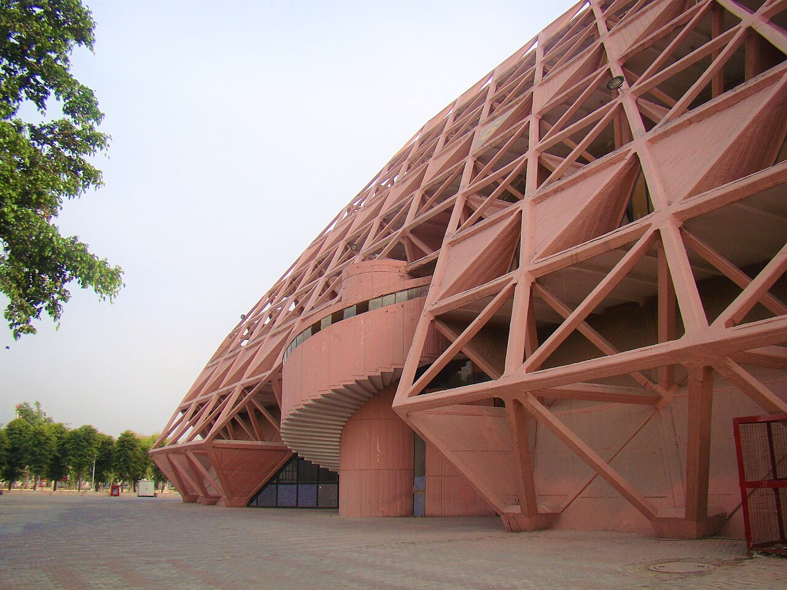
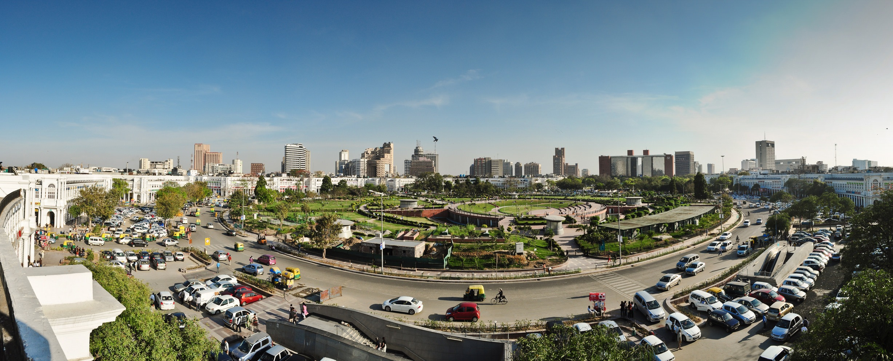

The essentials
See all 128 →Top buildings in Delhi
 UNESCO · 1572▤
UNESCO · 1572▤Humayun's Tomb
The first great Mughal garden-tomb; blueprint for the Taj Mahal.
 UNESCO · 1193▲
UNESCO · 1193▲Qutb Minar
The tallest brick minaret in the world, in a field of Sultanate ruins.
1931◈
Rashtrapati Bhavan
Lutyens' imperial climax — 340 rooms on Raisina Hill.
 1986❀
1986❀Lotus Temple
Fariborz Sahba's 27 marble petals — a global icon.

Brutalist · 1986▦Hall of Nations
Raj Rewal's concrete space-frame — demolished 2017, remembered here.

1929◉Connaught Place
Georgian colonnade at the commercial heart of New Delhi.